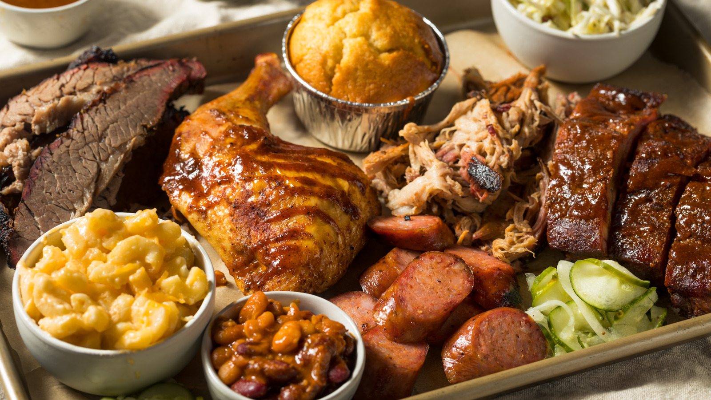
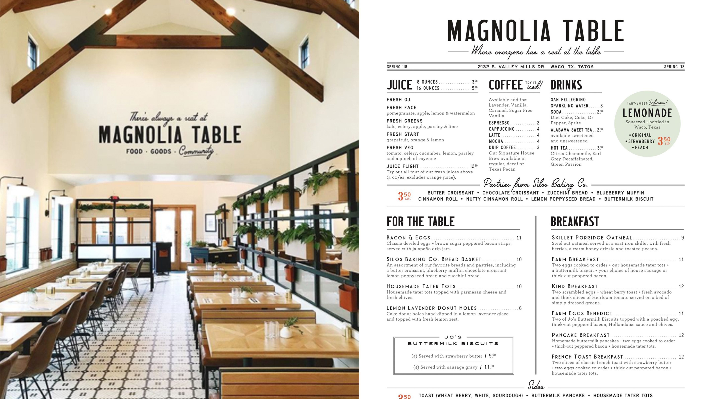
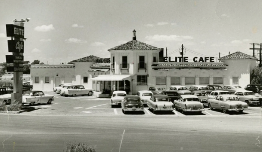
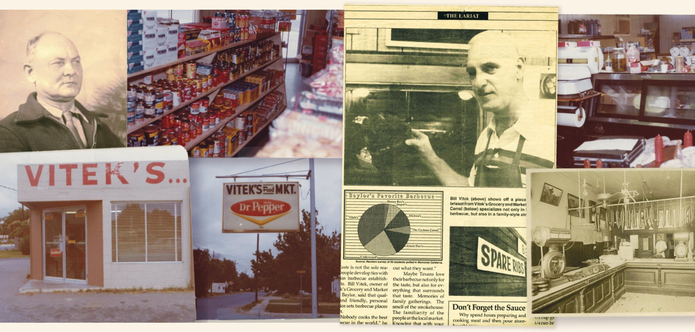

Food pitstops in Texas: Exploring Waco, Seguin, Mingus, and Strawn
This article explores restaurants in various cities in Texas, offering insights into their history, and flavors, providing readers with a guide for their Texas food adventure.

If you ever find yourself in middle to low tier popularity cities in Texas or if you are driving through the state, then this article might help you navigate. This article spill the beans, or at least some of them, on the hidden gems and under-the-radar restaurants that often slip through the cracks of the tourist maps. Whether it’s exploring BBQ options, or experiencing Texan vibes, this article serves as a guide for a satisfying food adventure in Texas.
WACO
🥞 Magnolia Table $$ Simple and neat. Not many options in the menu, but not little. Just about right and the description is very clear on what they offer. Great vibe in the restaurant. Magnolia’s table is owned by the famous Chip and Joanna Gaies who are well knowned from the popular “Fixed Upper” TV series which was nominated for two Primetime Emmies awards.  The idea for Magnolia Table was born out of Chip and Joanna’s love for hospitality and creating spaces where people can gather and connect. They wanted to bring their unique style and vision to the restaurant scene, offering a comfortable and welcoming atmosphere for guests.
The building that houses Magnolia Table has a rich history of its own. It was originally a historic Elite Cafe, a well-known restaurant in Waco that had been serving customers since 1919. Chip and Joanna Gaines acquired the property and renovated it to transform it into Magnolia Table, preserving the building’s character and charm. 
The renovated version of the restaurant first opened its doors in 2018 and quickly became a popular dining destination in the area. The menu at Magnolia Table features a variety of breakfast and brunch dishes, with a focus on fresh and locally sourced ingredients. Beyond its food offerings, Magnolia Table is known for its beautiful interior design. Chip and Joanna have infused their signature style into the space, creating a rustic yet modern ambiance with farmhouse-inspired decor.
🍖 Vitek’s BBQ $$ Vitek’s BBQ is a renowned barbecue restaurant located in Waco, Texas. It has a rich history that dates back several decades. The restaurant was established in 1915 by Slovak immigrant William Martin Vitek and has remained in the Vitek family ever since.  Originally known as Vitek’s Grocery Store, the business started as a small corner store that sold basic groceries and household items. Over time, Joe Vitek decided to expand the store’s offerings by adding a barbecue pit and serving smoked meats to customers. This decision proved to be a turning point for the business, as the barbecue became incredibly popular among locals and visitors alike.
In 1972, the name changed from Vitek’s Grocery and Meat Market to Vitek’s BBQ. In 1983, Vitek’s most famous offering was created: the “Gut Pak.” The Gut Pak is a hearty combination of smoked sausage, chopped beef, pickles, onions, and jalapenos served on a bed of Fritos corn chips. While it was recommended to us by the hotel receptionist, that day it was closed so we went to Rudy’s Bar-B-Q instead.
🍖 Rudy’s Bar-B-Q $ American chain restaurant for brisket. Not amazing but not bad. Rudy’s Bar-B-Q is a popular chain that originated in Leon Springs, Texas, near San Antonio in 1989. While Rudy’s Bar-B-Q has expanded to various locations across Texas and other states, including Waco, it started as a small country store with a barbecue pit.
DRIFTWOOD
🍖 Salt Lick BBQ $$— The Salt Lick BBQ is an iconic barbecue restaurant located in Driftwood, Texas. Established in 1967 by Thurman Roberts, Sr., and his wife Hisako, its roots trace back to the mid-1800s when Thurman’s ancestors settled into the Texas Hill Country. They perfected a unique barbecuing method involving open flames instead of the more common indirect heat method.

Drawing inspiration from a family recipe, Thurman and Hisako opened The Salt Lick with the goal of offering great food and a memorable experience. Over the years, it has gained immense popularity, becoming a must-visit spot for BBQ enthusiasts. It’s famous not only for its rich, smoky meats but also for its BYOB (bring your own beer) tradition and the picturesque vineyard setting. With more than 15,000 reviews Salt Lick maintains a tradition that Texans honor.
SEGUIN
🍖 Rocket Wings & Dixie Grill $ Texan flags, stars, baseball and football shirts, wooden tables, it doesn’t get more American than that. Huge portions. Good place for the vibes and if you are hungry. If someone that respects food opened a local fast food that’s how would look like. It’s chicken wings though were mediocre. 
🍖 Burnt Bean Company $$ Heard great things about it from local scientists at GBRA Lab in Seguin. Popular place among the locals with lines for BBQ. It earned a place at “The Texas Bucket List”.
The restaurant opened in January 2021. It did not take long to take off. Ernest Cevantes, the founder, mentions that his “claim to fame” can be explained by competition BBQ. Specifically he won 45 out of 50 great champions and everything you can win in Texas. He partnered up with one of his competitors in competition BBQ, David Kirkland.
MINGUS
🤌 Beneventi’s Italian Restaurant A fine dining restaurant with many years of history. It seems well established as it features in the popular YouTube channel”The Texas Bucket List“.
 The owner of the restaurant is an Italian immigrant. He arrived in Ellis Island in New York, got in a train, and migrated in the town of Mingus in 1906. He bought the place, and it started as a grocery store. It was bought on site for $88 and it came with four little girls and one of them became his wife. That building is about 160 years old.
The owner of the restaurant is an Italian immigrant. He arrived in Ellis Island in New York, got in a train, and migrated in the town of Mingus in 1906. He bought the place, and it started as a grocery store. It was bought on site for $88 and it came with four little girls and one of them became his wife. That building is about 160 years old.
You can tell that the place has a history as you can see some of the tomato sauces they used to sell back in the time. That is super cool, probably my favorite place out of all because of the historical vibes. We did not eat there since we were on our way to another town, I got the unsweetened iced tea, freshly made and tasty.
STRAWN
🍖 Mary’s cafe Quite popular restaurant in the area. The restaurant is popular for its chicken fried steak. Fun fact, Mary serves over 200 thousand pounds of potatoes and 50 thousand pounds of steak every year; this means 137 pounds (=62kg) of steak and 548 pounds (247kg) of potatoes per day!
Mary got her first job at the (only) other restaurant in the city after the 8th grade. In 1984, Mary started working in that restaurant which back then it was called “The polka dot”. By 1986 she owned the place and renamed it to 🥁… “Mary’s Cafe”! In the “The Texas Bucket List” video it says that Mary does it all and I can confirm that she at least does the waiter job; she was the one that took our order. I got the ‘chicken fried chicken’ and got to try the ‘steak fried chicken’. To be honest, I did not like either of these because I felt that the oil and meat amount was around 50%-50%, but what do I know, you go try and get your own opinion.
SCATTERED IN TEXAS
 Buc-ee’s — Buc-ee’s is a renowned convenience store and gas station chain that originated in Texas. Founded in 1982 by Arch “Beaver” Aplin III and Don Wasek, Buc-ee’s started as a modest convenience store in Lake Jackson, Texas. Unlike typical convenience stores, Buc-ee’s stands out with its oversized facilities, an abundance of gas pumps, immaculately clean restrooms, and an extensive range of products from travel snacks to home decor. Famous for their Beaver nuggets, jerky, and other proprietary snacks, Buc-ee’s has grown into a Texan travel institution.
Buc-ee’s — Buc-ee’s is a renowned convenience store and gas station chain that originated in Texas. Founded in 1982 by Arch “Beaver” Aplin III and Don Wasek, Buc-ee’s started as a modest convenience store in Lake Jackson, Texas. Unlike typical convenience stores, Buc-ee’s stands out with its oversized facilities, an abundance of gas pumps, immaculately clean restrooms, and an extensive range of products from travel snacks to home decor. Famous for their Beaver nuggets, jerky, and other proprietary snacks, Buc-ee’s has grown into a Texan travel institution.

Their mascot, a beaver with a baseball cap, has become an iconic symbol representing a unique blend of Southern hospitality and road trip convenience. Over the years, Buc-ee’s has expanded significantly and has started to branch out beyond Texas borders, yet remains a beloved pit stop for both locals and tourists.
Please clap 👏 on medium if you find this post helpful:)